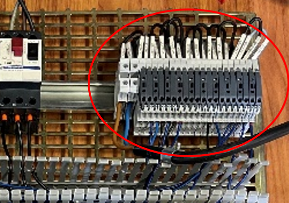

Vérifier la partie GEII d’un système
La compétence “Vérifier la partie GEII d’un système” implique :
- 1. Evaluer la cause racine d’un dysfonctionnement et 2. Proposer une solution corrective a un dysfonctionnent
Lors de mon stage, j’ai pu identifier la cause racine d’un dysfonctionnement et Proposer une solution corrective a un dysfonctionnent (Voir Rapport de Stage partie b .Mise sous tension).En effet durant la phase de test du câblage de la platine, j’ai eu un dysfonctionnement au niveau de l’alimentation du rack automate.

La mise sous tension a été effectuée par un de mes collaborateurs car je ne suis pas habilité à faire cette manœuvre. Avant la mise sous tension de la platine de test, j’ai revérifié mon câblage avec l’aide d’un de mes collaborateurs plus expérimentés que moi. Nous avons constaté des problèmes de vis mal serrées, les câbles pouvaient donc sortir des bornes. 
Cela aurait pu empêcher la platine de fonctionner ou même provoquer un court-circuit. Une fois la platine sous tension et les disjoncteurs enclenchés, le VAR s’est allumé, ce qui prouve que le câblage de l’alimentation est correct. Cependant, cela ne prouve pas le fonctionnement de toute la platine car les LED du rack automate étaient éteintes alors qu’elles auraient dû être vertes. Pour résoudre ce dysfonctionnement, j’ai suivi un protocole précis. Première étape : j’ai demandé qu’on enlève la tension de la platine pour que je puisse intervenir. Une fois cela fait, j’ai repris mon schéma et examiné la partie alimentation des cartes automates déportées. Cependant, rien ne me paraissait mal câblé, d’autant plus qu’il y avait déjà eu une vérification. Les cartes étant neuves, je considérais très peu la possibilité d’une carte défaillante. Deuxième étape : j’ai vérifié sous tension si le 24 V était bien distribué. Les cartes automates sont alimentées grâce à une carte qui sert de distributeur de 24 V en plus d’être une carte d’entrée ou de sortie. Elles peuvent être TOR (Tout Ou Rien) ou ANA (Analogique). TOR (Tout Ou Rien) est un signal 1 ou 0, souvent en 0/24 V, et ANA (Analogique) est un signal variable entre 0/10 V ou, comme pour le VAR, un signal 4/20 mA. Pour vérifier s’il y a bien de la tension dans les borniers concernés par l’alimentation des cartes, j’ai demandé à un de mes collaborateurs de faire une VAT (Vérification de l’Absence de Tension) sur certains borniers. Après la VAT, nous avons constaté que certains de ces borniers n’avaient pas de tension. Pour comprendre pourquoi, je me suis rapproché pour essayer de voir la référence du bornier et j’ai remarqué qu’il y avait un symbole de fusible. J’ai donc émis l’hypothèse que le fusible était grillé. Pour vérifier mon hypothèse, j’ai changé tous les câbles où il n’y avait pas de 24 V sur d’autres borniers.
Une fois cela fait, nous avons remis la tension et les LED se sont allumées en vert. Ensuite, les cartes reliées à la CPU (ce qui gère les commandes des cartes déportées et reçoit les informations des capteurs), sont détectées sur les ordinateurs de supervision. La liaison se fait grâce à un réseau Profinet. Une fois toutes ces étapes de vérification effectuées, je peux passer à la programmation du VAR. J’ai donc fait un protocole précis afin de l’identifier et le réparer. Grace a cette expérience, j’ai pu améliorer ma façon de voir les choses avec plus de recul et de discernement.